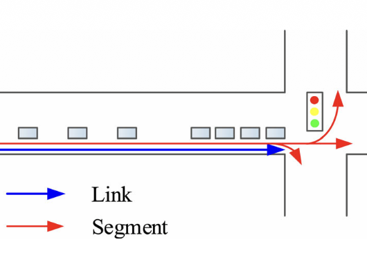
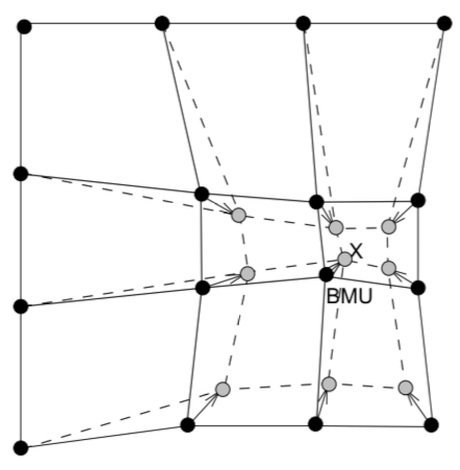
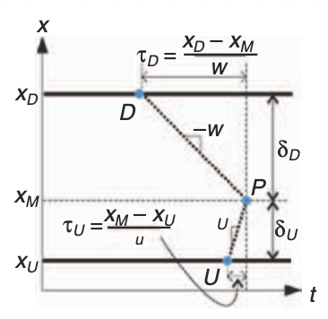

Traffic State Estimation: Travel-Time and Lane-Level Methods
Overview
Traffic state estimation is the process of inferring current traffic conditions—including speed, flow, density, congestion, and travel time—from incomplete, noisy, or sparsely distributed observations. By combining sensor measurements with traffic-flow models and data-driven methods, it provides a coherent view of how traffic evolves across roads, lanes, and networks, supporting reliable monitoring, prediction, navigation, and traffic management.
Our research advances traffic state and travel-time estimation across freeway and urban networks by combining physics-based stochastic modeling with data-driven learning:
- In connected urban environments, we modeled lane-level travel-time distributions by jointly considering link travel time and movement-specific signal delays, showing that kernel density estimation captures travel-time reliability more comprehensively than conventional parametric distributions[1].
- For recurrently congested freeways with sparse or malfunctioning detectors, we integrated self-organizing maps with support vector regression to identify representative sensors and accurately estimate real-time route travel times from limited data[2].
- We extended Newell's three-detector method to infer probabilistic traffic states at unobserved freeway locations from upstream and downstream counts while accounting for day-to-day demand variation, sensor errors, and uncertainty in fundamental-diagram parameters[3].
Publications

[1]Estimation of Lane-Level Travel Time Distributions under a Connected Environment

[2]Real-time Estimation of Freeway Travel Time with Recurrent Congestion Based on Sparse Detector Data

[3]Stochastic Extension of Newell's Three-Detector Method